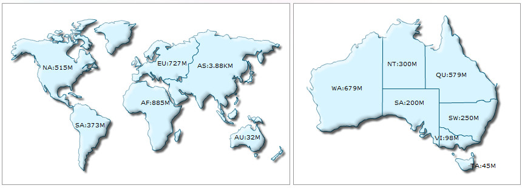

| Embedding multiple maps in a page |
|
Using FusionMaps XT, you can easily embed any number of maps in a single HTML page (or web page). You can even combine charts from FusionCharts XT, PowerCharts XT and gauges from FusionWidgets XT, which we will see in the next page. Code examples discussed in this section are present in Download Package > Code > MyFirstMap folder. In this example, we will add two maps. Two maps showing population of world and Australia. The page will look like the image below:  The process of embedding multiple maps is similar to that of embedding a single map. You just need to take care of the following:
The following sample code embeds two maps into a single HTML page (FirstMap-multiple-maps.html): |
<html>
<head>
<title>My First map using FusionMaps XT - multiple maps</title>
<script type="text/javascript" src="Maps/FusionCharts.js"></script>
</head>
<body>
<span id="mapContainerWorld">World map will load here</span>
<span id="mapContainerAus">Australia map will load here</span>
<script type="text/javascript"><!--
var WorldMap = new FusionCharts("Maps/FCMap_World.swf", "WorldMapId",
"400", "300", "0");
WorldMap.setXMLUrl("Data.xml");
WorldMap.render("mapContainerWorld");
var AusMap = new FusionCharts("Maps/FCMap_Australia.swf", "AusMapId",
"400", "300", "0");
AusMap.setXMLUrl("AustraliaPopulation.xml");
AusMap.render("mapContainerAus");
// -->
</script>
</body>
</html>
See it live! In the above code we have embedded two maps in a single page - World map and the Australia map, each having unique DOMIds - WorldMapId and AusMapId. Each FusionCharts JavaScript object has a unique name - WorldMap and AusMap. There are two HTML containers (SPAN elements) where each of the two maps are rendered. Each element also has unique ID - mapContainerWorld and mapContainerAus. We've used the same XML data for the World Map from our first map example and also built a new XML for the map of Australia. We've not shown the XML here, as we'll cover it in the XML structure of the map later. When you finally view the HTML page (with some formatting applied to above code), you'll get a result as shown under: What happens if Flash player is not available?
In case Flash Player is not available on certain devices (like iPad and iPhone), FusionCharts JavaScript library automatically renders the same map using JavaScript. If you are running the sample from local file system, please note that you will need to provide the data using the Data String method, that is, passing the data (XML/JSON) to the map as String or JSON Object. Many browsers restrict JavaScript from accessing local file system owing to security reasons. In the above example, since you had provided data as a URL, the JavaScript maps will not be able to access the same, when running locally. If you run the files from a server, it will run absolutely fine, though. When running locally, however, if you provide the data as string (using the Data String method), it works fine. <html>
<head>
<title>My First map using FusionMaps XT - multiple maps</title>
<script type="text/javascript" src="Maps/FusionCharts.js"></script>
</head>
<body>
<span id="mapContainerWorld">World map will load here</span>
<span id="mapContainerAus">Australia map will load here</span>
<script type="text/javascript"><!--
var WorldMap = new FusionCharts("Maps/FCMap_World.swf", "WorldMapId", "400", "300", "0");
WorldMap.setXMLData("<map borderColor='005879' fillColor='D7F4FF' numberSuffix='Mill.' includeValueInLabels='1' labelSepChar=':' baseFontSize='9'>"+
"<data>"+
"<entity id='NA' value='515' />"+
"<entity id='SA' value='373'/>"+
"<entity id='AS' value='3875' />"+
"<entity id='EU' value='727' />"+
"<entity id='AF' value='885' />"+
"<entity id='AU' value='32' />"+
"</data>"+
</map>");
WorldMap.render("mapContainerWorld");
var AusMap = new FusionCharts("Maps/FCMap_Australia.swf", "AusMapId", "400", "300", "0");
AusMap.setXMLData("<map borderColor='005879' fillColor='D7F4FF' numberSuffix='M' includeValueInLabels='1' labelSepChar=':' baseFontSize='9'>"+
"<data>"+
"<entity id='WA' value='679' />"+
"<entity id='NT' value='300'/>"+
"<entity id='QU' value='579' />"+
"<entity id='SA' value='200' />"+
"<entity id='SW' value='250' />"+
"<entity id='VI' value='98' />"+
"<entity id='TA' value='45' />"+
"</data>" +
</map>");
// -->
</script>
</body>
</html>
See it live! |